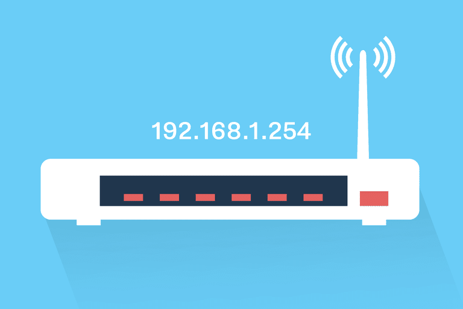

Faisal Ahmed.
Simplify IP Address Subdivision in Your Company with VLSM
Are you looking for an easy and efficient way to subdivide IP addresses in your network without any complications or losses? We are here to offer you the perfect solution using VLSM (Variable Length Subnet Mask).
Here are the complete instructions:
1-Enter the number of buildings first. 2- Specify the number of computers for each building. 3- Click 'Generate' to calculate IP addresses using VLSM. 4- View results for network addresses, subnet masks, and IP ranges. 5- Download the report or clear and start over.
Start now
